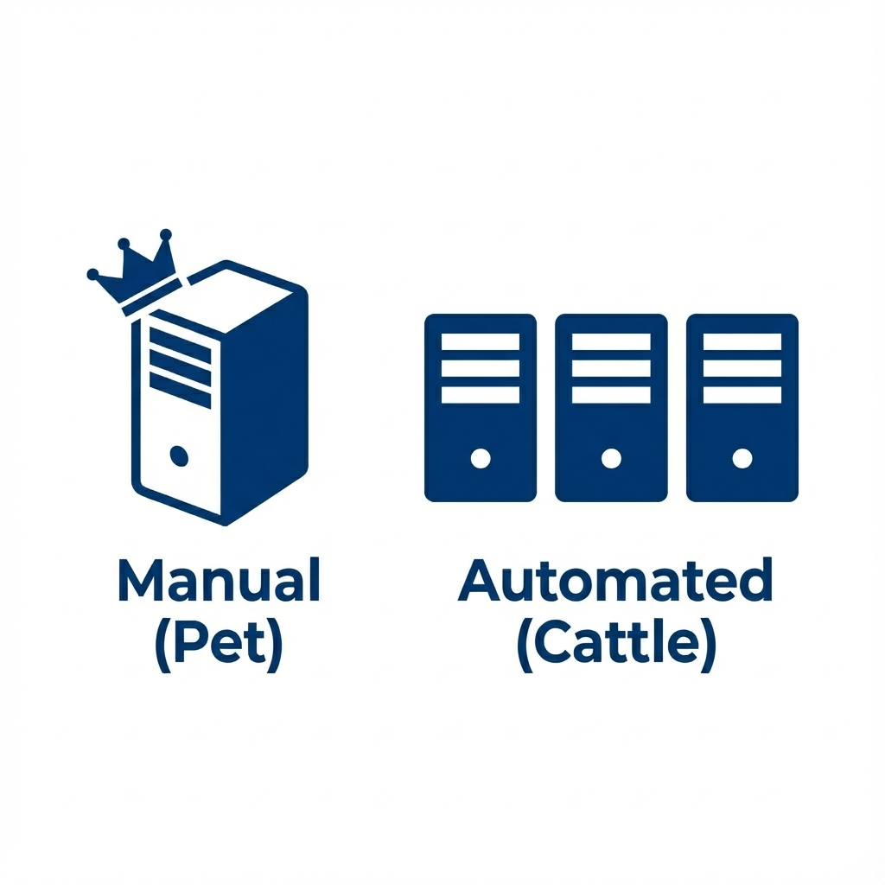
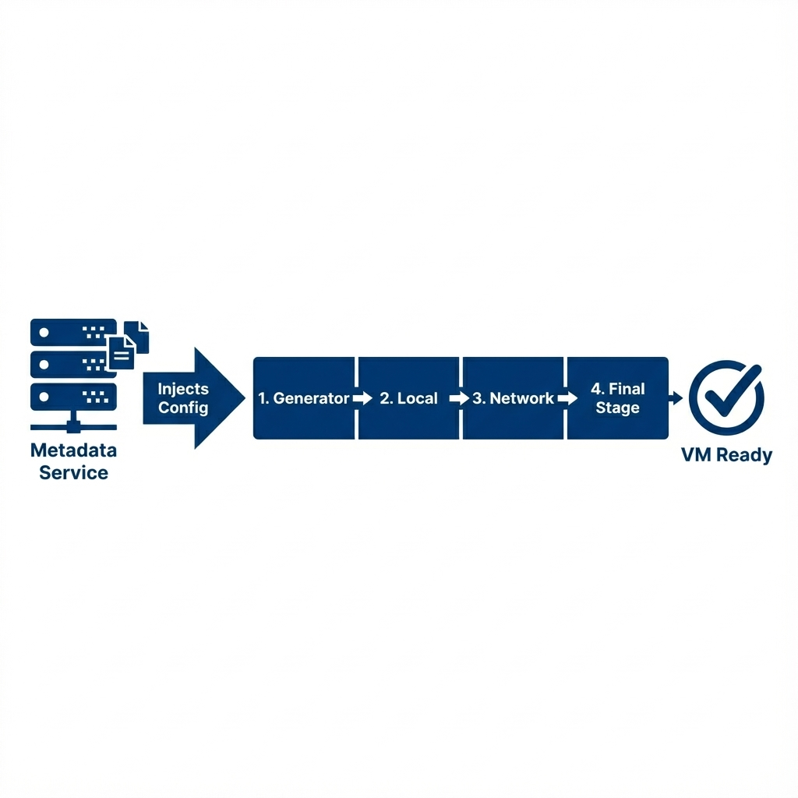

Automation and Cloud API
Student NotesCourse: Computer Systems Engineering Module: Operating Systems 3 (Virtualisation & Cloud Technologies) Topic: Automation and Cloud API Estimated Reading Time: 30 Minutes
[!TIP] How to succeed in this week: Automation is what separates a cloud engineer from a sysadmin. Focus on understanding APIs and Infrastructure as Code—clicking buttons doesn't scale, but code does.
Welcome to DevOps
Clicking GUI buttons is fine for 1 server. It fails for 100 servers. This creates a scalability bottleneck that manual administration simply cannot overcome.
This challenge gave birth to DevOps, a methodology that unifies software development (Dev) and IT operations (Ops). At its core, DevOps is about automation, collaboration, and speed. It shifts the focus from manually configuring servers to writing code that defines them—a concept known as Infrastructure as Code (IaC). In a DevOps model, infrastructure is versioned, tested, and deployed just like software applications, eliminating the "it works on my machine" problem.
This week, we learn to control the cloud using code. By mastering tools like the OpenStack CLI, Cloud-Init, Heat, and Ansible, you are learning the foundational skills required for a modern DevOps or Site Reliability Engineering (SRE) role. You will transition from clicking buttons in a dashboard to designing self-healing, automated systems that can scale to thousands of instances with a single command.
1. Advanced CLI Techniques
The openstack command is powerful, but by default, it formats output as ASCII tables designed for human readability. While this is helpful for interactive use, it poses a significant challenge for automation scripts, which struggle to parse table borders and varying whitespace. To build robust tools, we must use machine-readable output formats.
1.1 Formatting Output
The CLI natively supports JSON output, which provides a structured and predictable data format that scripting languages can easily parse. By appending --format json to any command, we strip away the visual formatting and receive raw data objects.
# Standard Table (Human Readable)
openstack server list
# JSON Output (Machine Readable)
openstack server list --format json
Command Analysis: *
--format json: Forces the CLI to output raw JSON data instead of an ASCII table. This is essential for piping data into tools likejqor Python scripts.
1.2 Parsing with jq
jq is a lightweight command-line JSON processor that allows us to filter, slice, and map JSON data directly in the terminal. It acts as a bridge between the verbose API output and the specific strings (like UUIDs) needed for subsequent commands.
# Basic: Get the ID of the network named 'private-net'
NET_ID=$(openstack network show private-net -f json | jq -r .id)
echo $NET_ID
# We pipe the server list into jq, filter for specific status, and extract the IDs.
ACTIVE_IDS=$(openstack server list -f json | jq -r '.[] | select(.Status=="ACTIVE") | .ID')
Code Analysis: *
$(): Command substitution; runs the inner command and assigns the output to the variable. *|: The pipe operator passes the output of the openstack command directly tojq. *jq -r .id: Filters the JSON to find the key "id". The-r(raw) flag removes quotation marks, leaving just the UUID. *select(): A powerfuljqfunction that acts like aWHEREclause in SQL, allowing you to filter lists based on conditions. In the example above, the-f jsonflag forces OpenStack to output JSON. We then pipe this valid JSON tojq. The-rflag is crucial as it outputs "raw" strings without quotation marks, making the output ready for variable assignment. We also use theselectfunction to filter the array, ignoring any servers that are building, paused, or shut down.
1.3 Architectural Insight: Golden Images vs. Post-Boot Config
The OpenStack for Architects book details two competing strategies for deploying applications: Golden Images and Post-Boot Configuration.
 Figure 1: Pet vs Cattle - Manual "Pet" servers require constant care, while Automated "Cattle" servers are replaceable and identical
Golden Images (Mutable/Baked) involve installing all application dependencies—such as Apache, PHP, and custom code—into the Virtual Machine image before it is ever launched. This is typically done using tools like Packer. The primary advantage is speed; since the software is pre-installed, the VM is ready almost instantly upon boot. However, this method suffers from "Image Sprawl," where every minor code change requires building and uploading a new multi-gigabyte image to Glance, consuming storage and bandwidth.
Post-Boot Configuration (Immutable/Runtime) takes a different approach. You launch a generic, "Vanilla" operating system image (like Ubuntu Cloud Image) and use automation tools to install software after the instance boots. While this results in a slower initial startup time as packages are downloaded and installed, it offers superior flexibility. A single small base image can serve thousands of different purposes. Modern cloud architecture typically favors a Hybrid Approach, using a base image for the OS and tools like Ansible for the final application configuration.
Section 1 Checkpoint
Summary: JSON is the lingua franca of Cloud APIs, providing a structured format that is difficult for humans to read but trivial for machines to parse. To work effectively with this data in a shell environment, jq is an essential tool for extracting specific fields like resource IDs. Before writing any automation script, a cloud engineer must master the ability to retrieve clean, predictable data programmatically rather than relying on brittle text parsing methods like grep.
Reflection: Consider why grep is a poor choice for parsing JSON data; a simple change in line breaks or spacing could break a script, whereas jq parses the data structure itself. Also, recall that the -r flag in jq strips quotes from the output, which is essentially when passing values to other CLI commands.
Resources: jq Tutorial
2. Cloud-Init: The Standard for Bootstrapping
When a virtual machine boots in the cloud, it starts as a generic "clone" of an Operating System. It has no idea who it is, what its hostname should be, or what software it needs. Cloud-Init is the industry-standard multi-distribution package that solves this identity crisis. It runs during the initial boot process to identify the environment and apply unique configurations.
 Figure 2: Cloud-Init Workflow - How the script is injected from the Metadata Service and executed during the first boot
2.1 How it Works: The Datasource
The magic of Cloud-Init relies on a Datasource. On boot, Cloud-Init acts like a detective, probing the network to find out where it is running. In OpenStack (and AWS), it typically queries the Metadata Service at the "Magic IP" 169.254.169.254. If it receives a response, it pulls down a JSON payload containing the instance's Hostname, SSH Keys, and the User Data provided by the operator.
2.2 Execution Stages
Cloud-Init does not run as a single script; it executes in distinct stages throughout the boot process to ensure dependencies are met: 1. Generator: Determines if cloud-init should run at all. 2. Local (Init): Finds the datasource and applies networking. This is critical because without networking, it cannot fetch further data. 3. Network (Config): Runs after networking is up. Disk formatting, mount points, and SSH key injection happen here. 4. Final: This is where User Data scripts run (installing packages, running commands). This ensures the system is fully online before attempting to install software.
2.3 The Cloud-Config Format
While User Data can be a simple Bash script, the preferred format is Cloud-Config. This is a declarative YAML syntax that abstractly defines what you want, rather than how to do it. To use this format, the input string must begin with the #cloud-config directive.
#cloud-config
hostname: web-01
packages:
- apache2
- htop
runcmd:
- systemctl start apache2
- echo "<h1>Deployed via Automation</h1>" > /var/www/html/index.html
Config Analysis: *
#cloud-config: The required header telling Cloud-Init this is declarative YAML. *packages: A list of software to install via the OS package manager (apt,yum). *runcmd: A list of shell commands to execute after packages are installed. This is often used to start services or configure files.
2.4 Common Patterns (The Cookbook)
Writing User Data requires understanding common patterns. Below are standard recipes frequently used in production.
Pattern 1: The Web Server This pattern installs a web server, writes a custom index file, and ensures the service is running.
#cloud-config
packages:
- nginx
write_files:
- content: |
<h1>Welcome to Cloud</h1>
path: /var/www/html/index.html
runcmd:
- systemctl restart nginx
Pattern Analysis: *
write_files: Creates use-case specific configuration files. Thecontentblock allows multiline text. *runcmd: Restarts the service to ensure the new configuration is applied.
Pattern 2: The User Creator This pattern creates a new user account, grants it sudo privileges without a password requirement, and injects an SSH public key for secure access.
#cloud-config
users:
- name: student
groups: sudo
shell: /bin/bash
sudo: ['ALL=(ALL) NOPASSWD:ALL']
ssh_authorized_keys:
- ssh-rsa AAAAB3Nza...
Pattern Analysis: *
users: A dedicated module for user management. *sudo: Grants password-less root access, critical for automated management tools like Ansible.
Pattern 3: The Update This pattern instructs the system to upgrade all installed packages on boot. Use this cautiously, as it significantly increases the boot time.
#cloud-config
package_upgrade: true
Pattern Analysis: *
package_upgrade: true: Forces anapt-get upgradeoryum updateon first boot. While secure, it adds significant time to the boot process.
2.5 Using it in CLI
To inject this configuration, you save the YAML to a local file (e.g., setup.yaml) and pass it to the compute API during the server creation process.
openstack server create \
--flavor m1.tiny \
--image ubuntu \
--user-data setup.yaml \
my-automated-server
Command Analysis: *
--user-data setup.yaml: Injects the contents of the filesetup.yamlinto the instance's metadata service. Cloud-Init reads this file upon first boot.
2.6 Troubleshooting (When things go wrong)
A common mistake is assuming that if a server boots, the automation worked. If your script fails (e.g., a syntax error in YAML), the server will still boot, but your app won't be there. To debug this, you must SSH into the server and check the logs:
/var/log/cloud-init.log: The high-level log of what cloud-init attempted to do./var/log/cloud-init-output.log: The raw stdout/stderr of your scripts. If yourapt-get installfailed, the error message will be here.
Section 2 Checkpoint
Summary: Cloud-Init is the bridge between a generic OS image and a functional server. It relies on a Datasource (Metadata Service) to fetch configuration. It executes in strict Stages (Init -> Config -> Final) to ensure the network is ready before attempting to install software. Debugging automation failures requires inspecting the logs inside the VM, as errors here rarely stop the instance from booting.
Reflection: Why is the "Magic IP" (169.254.169.254) accessible from inside the VM without any internet access? (Hint: It is a Link-Local address routed explicitly by the Hypervisor/Neutron).
Resources: Cloud-Init Documentation
3. Automating with Scripts
Now that we have the tools (CLI, jq, Cloud-Init), let's put them together. The most basic form of automation is Scripting.
3.1 The "Bash Loop" (Imperative)
Imagine a scenario where you need to provision a cluster of five servers for a Load Balancing laboratory. Doing this manually is tedious and error-prone. A simple loop can automate the process effectively.
#!/bin/bash
echo "Deploying Cluster..."
for i in {1..5}; do
echo "Launching web-$i..."
openstack server create \
--flavor m1.tiny \
--image cirros \
--network private-net \
web-$i
done
Script Analysis: *
for i in {1..5}: Creates a loop that runs 5 times, with variable$iset to 1, 2, 3, 4, 5. *web-$i: Dynamically names the servers (web-1, web-2...) using the variable. *--network private-net: Ensures all servers attach to the same internal network.
3.2 Python Automation (The SDK)
While Bash scripts are useful for quick tasks, they often become unmaintainable "spaghetti code" when applied to complex systems. For professional cloud engineering, the OpenStack SDK (Python) provides a robust alternative.
Why Python?
Python offers several advantages over shell scripting. First, Error Handling is handled gracefully through try/except blocks, preventing the script from crashing unexpectedly. Second, Python's native Data Structures, such as Dictionaries and Lists, are far easier to manipulate than parsing string output from a CLI commands. Finally, the logic required for Idempotency—checking if a resource exists before attempting to create it—is significantly cleaner to implement.
3.2.1 Authentication (The clouds.yaml)
Hardcoding passwords into scripts is a major security risk. Instead, OpenStack uses a standardized configuration file named clouds.yaml to decouple credentials from code. When you run a script, the SDK searches for this file in a specific order of precedence:
- Current Directory: Checks
./clouds.yaml(Good for project-specific configs). - User Config: Checks
~/.config/openstack/clouds.yaml(The standard location for your personal credentials). - System Config: Checks
/etc/openstack/clouds.yaml(Global settings for all users).
This allowing you to share your Python script with a colleague without accidentally sharing your password—they simply use their own clouds.yaml.
Example Content (clouds.yaml):
clouds:
openstack:
auth:
auth_url: "http://10.0.0.10:5000/v3"
username: "admin"
password: "secret_password"
project_name: "admin"
domain_name: "Default"
region_name: "RegionOne"
interface: "public"
identity_api_version: 3
Explanation: *
clouds: The top-level key containing all cloud definitions. *openstack: The specific profile name. In Python, we select this withcloud='openstack'. *auth_url: The Keystone API endpoint. The SDK sends credentials here to get a token.
Connecting in Python:
from openstack import connection
# Connect using the 'openstack' profile defined above
conn = connection.from_config(cloud='openstack')
3.2.2 Reading Resources (Listing Servers)
The SDK returns Objects, not text. This means you can access properties like .id or .status directly without complex parsing.
print("Listing Servers:")
servers = conn.compute.servers()
for server in servers:
print(f"ID: {server.id} | Name: {server.name} | Status: {server.status}")
Code Analysis: *
conn.compute.servers(): Returns a "generator" (an iterable list) of Server objects. *server.name: We access the data using dot-notation, which is type-safe and cleaner thangrep.
3.2.3 Creating Resources (The Clean Way)
Creating a server in Python allows us to wrap the logic in a Try/Except block to handle failures (like Quota errors) gracefully.
try:
print("Creating Server...")
server = conn.compute.create_server(
name="web-python-01",
image_id="cirros-id-here",
flavor_id="m1.tiny",
networks=[{"uuid": "private-net-id"}]
)
# Wait for it to be ready
conn.compute.wait_for_server(server)
print(f"Created Server: {server.name}")
except Exception as e:
print(f"Failed to create server: {e}")
Code Analysis: *
create_server(): Accepts arguments as standard Python types (Strings, Lists). *wait_for_server(): A helper function that pauses the script until the server enters theACTIVEstate, replacing manualsleeploops. *try/except: If the cloud is full or the network ID is wrong, the script captures the error and prints a friendly message instead of crashing with a stack trace.
4. Infrastructure as Code: Heat vs Terraform
The distinction between "Imperative" scripts (Bash) and "Declarative" Infrastructure as Code (IaC) is fundamental. Imperative tools describe how to achieve a task step-by-step, whereas Declarative tools describe the desired end state, leaving the "how" to the engine.
4.1 The Two Giants
Two primary tools dominate this landscape. Heat is the OpenStack Native orchestration engine. It is built directly into the platform, requires no external installation, and uses YAML templates. It is the ideal choice for pure OpenStack environments where external tool dependencies are undesirable. Terraform, created by HashiCorp, is the Industry Standard for multi-cloud provisioning. It uses the HashiCorp Configuration Language (HCL) and supports AWS, Azure, Google Cloud, and OpenStack simultaneously, making it the dominant skill in the broader job market.
4.2 Syntax Comparison (Creating a Server)
Option A: OpenStack Heat (HOT)
resources:
my_server:
type: OS::Nova::Server
properties:
image: ubuntu
flavor: m1.small
Option B: Terraform (HCL)
image_name = "ubuntu"
flavor_name = "m1.small"
}
Comparison: * Heat: Uses
type: OS::Nova::Serverand nested properties. * Terraform: Usesresource "type" "name"and=assignment syntax. Both achieve the exact same result.Note: In this course, we focus on Heat because it requires no external setup and allows you to understand the underlying OpenStack resource model directly. However, in a multi-cloud professional environment, Terraform is the tool you will most likely encounter.
Section 4 Checkpoint
Summary: We have moved from Imperative scripts, where we define strict procedural steps, to Declarative IaC, where we define the target architecture. A critical property of these modern tools is Idempotency—the ability to execute the same script multiple times without causing errors or duplicating resources. If the resource already exists in the desired state, the tool simply does nothing.
Reflection: Consider why a company using multiple cloud providers (e.g., AWS and on-prem OpenStack) would prefer Terraform over Heat. Also, think about the consequences of removing a resource definition from a Terraform file or Heat template; unlike a script which simply stops running, IaC tools will actively destroy the resource to ensure the real world matches your definition.
5. Orchestration with Heat (The Template Engine)
Orchestration goes beyond simple resource creation; it manages the dependencies and lifecycle of complex applications. In OpenStack, the native Orchestration engine is Heat.
5.1 Anatomy of a Template
Heat uses YAML templates known as HOT (Heat Orchestration Templates). Every template follows a standard skeleton:
- Version:
heat_template_version: 2018-08-31tells Heat which features are available. - Parameters: Inputs provided by the user at runtime (e.g., SSH Key Name, Server Flavor).
- Resources: The actual infrastructure to build (VMs, Networks, Volumes).
- Outputs: Information returned to the user after deployment (e.g., The Website URL).
heat_template_version: 2018-08-31
description: A skeleton template
parameters:
# Inputs defined here
resources:
# Infrastructure defined here
outputs:
# Return values defined here
Structure Analysis: * Version: Always required. Defines the syntax version (HOT 2018-08-31 is standard for Queens/Rocky releases). * Parameters: Variables passed in (Input). * Outputs: Variables passed out (Return values).
5.2 Building Blocks (Primitives)
Rather than writing a massive script immediately, let's look at how to create individual components.
Creating a Network
resources:
my_private_net:
type: OS::Neutron::Net
properties:
name: deep-dive-net
Resource Analysis: *
resources: The top-level keyword indicating the start of the infrastructure definition block. *my_private_net: The Logical ID (Variable Name) used to reference this resource elsewhere in the template. *type: The specific OpenStack resource class (e.g.,OS::Neutron::Net). *properties: Configuration specific to that resource (like the network name).
Creating a Security Group
resources:
my_security_group:
type: OS::Neutron::SecurityGroup
properties:
rules:
- protocol: tcp
port_range_min: 80
port_range_max: 80
remote_ip_prefix: 0.0.0.0/0
Resource Analysis: *
rules: OpenStack Security Groups are Default Deny. No traffic is allowed unless explicitly permitted here. *protocol: The definition (tcp, udp, icmp). *port_range_min/max: The port range (80 to 80 means just port 80). *remote_ip_prefix: Defines Who can access this port (The Source).0.0.0.0/0is CIDR notation for "The entire internet." For specific networks, you would use something like192.168.1.0/24.
Creating a Block Storage Volume
resources:
my_data_volume:
type: OS::Cinder::Volume
properties:
size: 10
name: db_data
Resource Analysis: *
my_data_volume: The Logical ID. *type: OS::Cinder::Volume: Explicitly creates a block device in Cinder. *size: The capacity in Gigabytes (GB). *name: The display name visible in the dashboard.
Creating a Virtual Machine
resources:
my_server:
type: OS::Nova::Server
properties:
image: ubuntu
flavor: m1.small
Resource Analysis: *
my_server: The Logical ID. *type: OS::Nova::Server: The standard compute instance type. *image/flavor: The Mandatory properties defining the specs. * Note: There are many other optional properties not shown here, such askey_name(SSH Access),networks(Connectivity),security_groups(Firewall), anduser_data(Cloud-Init Scripts). We will combine these in the Unified Stack example below.
5.3 The Unified Stack
The true power of Heat comes from combining these primitives using Intrinsic Functions.
{ get_resource: X }: Gets the ID of resource X.{ get_param: Y }: Gets the value of user input Y.{ get_attr: [Z, val] }: Gets a specific attribute (like an IP address) from resource Z.
Full Deployment Example (deployment.yaml):
heat_template_version: 2018-08-31
description: Full Stack Deployment with Nginx and Floating IP
parameters:
key_name:
type: string
description: Name of an existing KeyPair to use
public_net_id:
type: string
description: ID of the external network (e.g., public-net)
resources:
# 1. The Network
app_net:
type: OS::Neutron::Net
app_subnet:
type: OS::Neutron::Subnet
properties:
network: { get_resource: app_net }
cidr: 192.168.10.0/24
# 2. The Security Group
web_sg:
type: OS::Neutron::SecurityGroup
properties:
rules:
- protocol: tcp
port_range_min: 80
port_range_max: 80
remote_ip_prefix: 0.0.0.0/0
- protocol: icmp
remote_ip_prefix: 0.0.0.0/0
# 3. The Server
web_instance:
type: OS::Nova::Server
properties:
image: ubuntu_focal
flavor: m1.small
key_name: { get_param: key_name }
networks:
- network: { get_resource: app_net }
security_groups:
- { get_resource: web_sg }
user_data: |
#cloud-config
packages:
- docker.io
runcmd:
- systemctl enable docker
- systemctl start docker
- docker run -d -p 80:80 nginx
# 4. Floating IP (The Bridge to Internet)
my_floating_ip:
type: OS::Neutron::FloatingIP
properties:
floating_network: { get_param: public_net_id }
# 5. The Association (Connecting IP to Server)
association:
type: OS::Neutron::FloatingIPAssociation
properties:
floatingip_id: { get_resource: my_floating_ip }
port_id: { get_attr: [web_instance, addresses, { get_resource: app_net }, 0, port] }
outputs:
website_url:
description: The Public URL of the deployed application
value: { get_attr: [my_floating_ip, floating_ip_address] }
Stack Analysis: * Floating IP: We created a
FloatingIPresource on the public network and then anAssociationresource to link it to our server. This is how the server becomes accessible from your laptop. * User Data: We embedded a Cloud-Config payload to install Docker and launch Nginx as a container. Heat injects this into Cloud-Init, which executes the declarative instructions on boot. * Dependency Chain: Theassociationdepends on both thefloating_ipand theweb_instance. Heat orchestrates this perfectly.
5.4 The Terraform Translation (Rosetta Stone)
To prove that these skills are transferable, here is the exact same Nginx server we built in Heat, translated into Terraform. Notice that while the keywords differ (resources vs resource), the structural logic—defining a network, security group, and server with dependencies—is identical.
Terraform (main.tf)
variable "key_name" {}
variable "public_net_id" {}
# 1. The Network
resource "openstack_networking_network_v2" "app_net" {
name = "app_net"
}
resource "openstack_networking_subnet_v2" "app_subnet" {
network_id = openstack_networking_network_v2.app_net.id
cidr = "192.168.10.0/24"
}
# 2. The Security Group
resource "openstack_networking_secgroup_v2" "web_sg" {
name = "web_sg"
description = "Web Security Group"
}
resource "openstack_networking_secgroup_rule_v2" "http_rule" {
direction = "ingress"
ethertype = "IPv4"
protocol = "tcp"
port_range_min = 80
port_range_max = 80
remote_ip_prefix = "0.0.0.0/0"
security_group_id = openstack_networking_secgroup_v2.web_sg.id
}
# 3. The Server
resource "openstack_compute_instance_v2" "web_instance" {
name = "web-server"
image_name = "ubuntu_focal"
flavor_name = "m1.small"
key_pair = var.key_name
user_data = <<-EOF
#cloud-config
packages:
- docker.io
runcmd:
- systemctl start docker
- docker run -d -p 80:80 nginx
EOF
network {
uuid = openstack_networking_network_v2.app_net.id
}
}
# 4. Floating IP
resource "openstack_networking_floatingip_v2" "my_floating_ip" {
pool = var.public_net_id
}
# 5. Association
resource "openstack_compute_floatingip_associate_v2" "association" {
floating_ip = openstack_networking_floatingip_v2.my_floating_ip.address
instance_id = openstack_compute_instance_v2.web_instance.id
}
output "website_url" {
value = openstack_networking_floatingip_v2.my_floating_ip.address
}
Translation Analysis: * References: Heat uses
get_resource. Terraform usesresource_type.resource_name.id. * Structure: Both tools define resources, properties, and dependencies. The syntax changes (YAML vs HCL), but the concepts are universal. By learning Heat, you are effectively learning the logic needed for Terraform.
5.5 Beyond Single VMs: Magnum (Kubernetes)
In Section 5.3, we installed Docker on a single VM. While fine for development, production requires clusters.
OpenStack Magnum is the service that bridges Heat and Containers.
- Orchestration: Magnum uses Heat under the hood to deploy a stack.
- Resources: It automatically creates the Master Nodes, Worker Nodes, Load Balancers, and Private Networks.
- Result: Instead of a VM with Docker, you get a fully manageable Kubernetes Cluster.
To deploy a production-grade Kubernetes cluster on OpenStack, we use the Magnum CLI. This happens in 3 phases:
Phase 1: Create the Cluster Template This defines the "Shape" of the cluster (OS Image, Keypair, Network Driver).
openstack coe cluster template create k8s-template \
--image fedora-coreos-35 \
--keypair mykey \
--external-network public \
--dns-nameserver 8.8.8.8 \
--flavor m1.medium \
--master-flavor m1.medium \
--coe kubernetes
Command Analysis: *
template create: Sets the blueprint. *--image: Magnum requires special Fedora Atomic or CoreOS images optimized for containers, not standard Ubuntu. *--coe: Specifies the engine. Magnum also supports Docker Swarm and Apache Mesos, but Kubernetes is the standard.
Phase 2: Launch the Cluster This triggers Heat to actually build the stack (VMs, Load Balancers, Security Groups).
openstack coe cluster create k8s-cluster \
--template k8s-template \
--master-count 1 \
--node-count 2
Command Analysis: *
cluster create: The trigger. This tells Heat to start provisioning resources. *--master-count: High Availability (HA) starts at 3 masters, but for labs, 1 is sufficient. *--node-count: The number of workers where your actual Pods (like Nginx) will run.
Phase 3: Configure Client Access
Once the cluster is CREATE_COMPLETE, we download the credentials to talk to it.
mkdir -p ~/.kube
openstack coe cluster config k8s-cluster > ~/.kube/config
export KUBECONFIG=~/.kube/config
kubectl get nodes
Command Analysis: *
cluster config: This command fetches the TLS certificates and API endpoints from OpenStack. *export KUBECONFIG: Tells thekubectltool where to find these credentials. Without this,kubectldoesn't know which cluster to talk to.
5.5.1 Step 4: Deploying Workloads (Pods vs VMs)
Now that the cluster is running, we stop talking to OpenStack (Heat) and start talking to Kubernetes (kubectl). Here is how we deploy Nginx with 3 Replicas (Load Balanced).
Kubernetes Manifest (nginx-deployment.yaml)
apiVersion: apps/v1
kind: Deployment
metadata:
name: nginx-cluster
spec:
replicas: 3 # The Power of K8s: 3 Copies automatically managed
selector:
matchLabels:
app: web
template:
metadata:
labels:
app: web
spec:
containers:
- name: nginx
image: docker.io/nginx:latest
ports:
- containerPort: 80
---
apiVersion: v1
kind: Service
metadata:
name: nginx-lb
spec:
type: LoadBalancer # OpenStack will create a physical Load Balancer for this
selector:
app: web
ports:
- port: 80
targetPort: 80
Stack Analysis: * Replicas: 3: Instead of creating
web_server_01,web_server_02, etc., we simply ask for "3 copies". Kubernetes ensures they are always running. * Service (LoadBalancer): This object talks to OpenStack Neutron/Octavia to provision a real Load Balancer that distributes traffic to those 3 pods.
Section 5 Checkpoint
Summary: Heat templates allow us to define an entire infrastructure stack in a single file. By understanding the core structure (Parameters, Resources, Outputs) and the Building Blocks (Cinder, Nova, Neutron resources), we can assemble complex environments that are consistently reproducible.
Reflection: Why is it better to define the Security Group inside the template rather than assuming it already exists? (Hint: It makes the template "self-contained" and easier to deploy in a fresh project).
6. Configuration Management with Ansible
We have now learned how to create servers using Heat (Infrastructure as Code) and how to bootstrap them using Cloud-Init. But what happens on Day 2? How do you patch 50 servers? How do you update a config file on all of them? Rebuilding the entire stack with Heat every time you need to change a comma in a config file is inefficient.
Ansible is the industry-standard tool for this phase. It is an agentless automation engine that connects to your servers via SSH and enforces a desired state.
6.1 The Inventory
Ansible needs to know what it is managing. This is defined in an Inventory file. While it supports a simple INI format, YAML is preferred for clarity.
Example Inventory (hosts.yaml):
all:
children:
webservers:
hosts:
web-01:
ansible_host: 192.168.1.10
web-02:
ansible_host: 192.168.1.11
databases:
hosts:
db-01:
ansible_host: 192.168.1.20
Inventory Analysis: *
all: The root group containing every server. *children: Sub-groups (e.g.,webservers,databases) allow you to target specific roles. *ansible_host: Variable defining the actual IP to connect to.
6.2 Ad-Hoc Commands
For quick, one-off tasks, you don't need to write a script. You can simply "speak" to your cluster using the CLI.
# Ping all servers
ansible all -m ping -i hosts.yaml
# Check uptime on webservers only
ansible webservers -m shell -a "uptime" -i hosts.yaml
Command Analysis: *
all/webservers: The target group from the inventory. *-m ping: The Module to run. 'ping' in Ansible checks SSH connectivity and Python availability, not ICMP. *-a: Arguments passed to the module.
6.3 Playbooks (The Core)
While Ad-Hoc commands are useful, the real power lies in Playbooks. These are YAML files that describe a complex set of tasks—a "play."
Example Playbook (site.yaml):
- name: Configure Web Servers
hosts: webservers
become: yes # Run as sudo
tasks:
- name: Ensure Apache is installed
apt:
name: apache2
state: present
- name: Deploy custom index page
copy:
content: "<h1>Managed by Ansible</h1>"
dest: /var/www/html/index.html
- name: Ensure Service is Running
service:
name: apache2
state: started
Playbook Analysis: *
apt,copy,service: These are Modules. They abstract away the OS details (e.g., you don't typeapt-get install, you just saystate: present). * Idempotency: This is the most critical concept. If you run this playbook 100 times, it will only make changes the first time. On subsequent runs, it checks "Is Apache present?", sees "Yes", and does nothing. This makes it safe to run against production systems repeatedly.
6.4 The Unified Pipeline (Integration)
The ultimate goal is to chain these tools together. A simple Bash script can act as the "glue" that triggers Heat to build the infrastructure, waits for the output, and then passes that information to Ansible for configuration.
Example: deploy.sh
#!/bin/bash
# 1. Launch Infrastructure with Heat
echo "Step 1: Creating Stack..."
openstack stack create -t deployment.yaml -p key_name=mykey my-stack
# 2. Wait for completion (Simple loop)
echo "Step 2: Waiting for IP..."
while true; do
STATUS=$(openstack stack show my-stack -f json | jq -r .stack_status)
if [ "$STATUS" == "CREATE_COMPLETE" ]; then break; fi
sleep 5
done
# 3. Extract the IP Address (Output)
IP=$(openstack stack show my-stack -f json | jq -r '.outputs[] | select(.output_key=="website_url") | .output_value')
echo "deployed at $IP"
# 4. Generate Inventory for Ansible
echo "[webservers]" > hosts.ini
echo "$IP ansible_user=ubuntu" >> hosts.ini
# 5. Run Configuration
echo "Step 3: Configuring with Ansible..."
ansible-playbook -i hosts.ini site.yaml
Pipeline Analysis: * Glue Code: Bash is used here not to manage resources, but to manage tools. It bridges the gap between Heat (Infrastructure) and Ansible (Config). * Dynamic Inventory: Note how we create
hosts.inion the fly. Note:ansible_user=ubuntuassumes an Ubuntu image; adjust this for Rocky/CentOS (rocky) or Fedora (fedora).
Section 6 Checkpoint
Summary: Ansible fills the gap of "Day 2 Operations." It uses an Inventory to group servers and Playbooks to define their configuration. Unlike a Bash script which runs blindly, Ansible is Idempotent—it only acts if the system is not in the desired state.
Reflection: Compare this to the Bash script in Section 3. If you ran that Bash script twice, it would try to create the servers again (and fail). If you run an Ansible playbook twice, it simply reports "OK" (No Change).
7. Version Control: Managing your Templates
Treating Infrastructure as Code means your templates (deployment.yaml) and playbooks (site.yaml) are valuable assets. They should not live in a folder on your laptop; they should be managed in a Version Control System like Git.
7.1 Why Git?
- History: "Who changed the firewall rule last Tuesday?" Git tells you exactly who and why.
- Rollback: If a new template breaks production,
git revertallows you to instantly return to the working version. - Collaboration: Multiple engineers can work on the same stack without overwriting each other's files.
7.2 The Basic Workflow
Students are expected to manage their Capstone project using these commands:
# Initialize a repository
git init
# Add your templates
git add deployment.yaml site.yaml
# Save a snapshot (Checkpoint)
git commit -m "Added Nginx installation to Heat template"
# View History
git log
Git Analysis: *
commit: This is your "Save Game" button. Make a commit every time you reach a stable state (e.g., "Heat template works", "Ansible connects"). * GitOps: In advanced environments, applying a commit to a Git repository automatically triggers thedeploy.shpipeline we wrote above. This is known as GitOps.
7.3 Strategic Summary
To help you lock in the mental model of "Which Tool, When?", review this comparison:
| Tool | Phase | Scope |
|---|---|---|
| Cloud-Init | Boot time | Single VM |
| Bash | Glue | Tool orchestration |
| Python SDK | API automation | Fine-grained logic |
| Heat | Infrastructure | Declarative Stacks |
| Magnum | Clusters | Platform-level |
| Ansible | Day-2 Ops | Fleet Management |
| Kubernetes | Workloads | Container Orchestration |
| --- |
8. Summary and Next Steps
This week we evolved from "ClickOps" to DevOps. We learned that while GUIs are great for exploration, they do not scale. By using Cloud-Init for boot-time logic, Heat for infrastructure definition, Ansible for configuration, and Magnum for container orchestration, we built a repeatable, self-healing cloud environment.
Preparing for Week 12
Next week is the Capstone Project. You will combine everything you have learned in the last 11 weeks to build a Production-Ready Cloud Environment. You will need to provision the network, compute nodes, and storage, and then configure a scalable web service using the automation tools we mastered this week.
Checklist:
- Can you differentiate between Imperative (Bash) and Declarative (Heat) automation?
- Do you understand why Idempotency is critical for Day-2 operations?
- Can you explain the transition from Infrastructure-as-Service (Nova) to Platform-as-Service (Magnum)?
- Are you ready to use Git to manage your project templates?
9. Additional Resources
jq Playground Cloud-Init Examples
10. Lab Exercises
Lab 1: Automation with Scripts Goal: Scripting cloud deployments with Bash, Python, and Heat.
Lab 2: Configuration with Ansible Goal: Using Ansible Playbooks to configure a web server fleet.
Lab 3: heat Infrastructure Goal: Declarative deployment of Network, Security Groups, and Servers.
Lab 4: Kubernetes with Magnum Goal: Provisioning a K8s cluster and deploying containers.
Test Your Knowledge
Ready to check your understanding of this week's material? Take the interactive quiz now!
Start Quiz